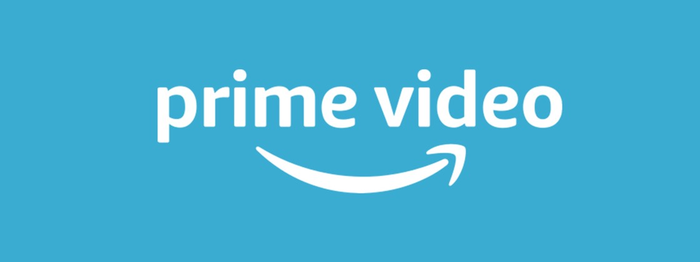
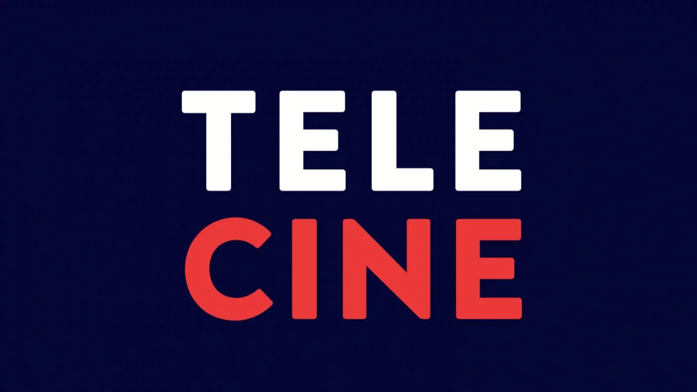
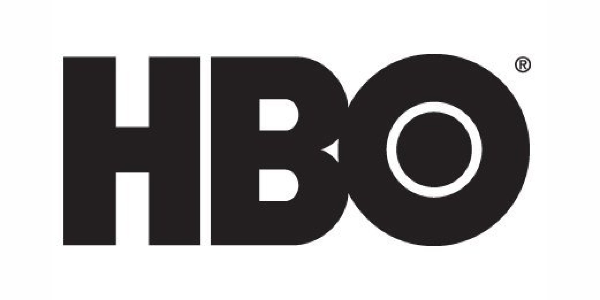
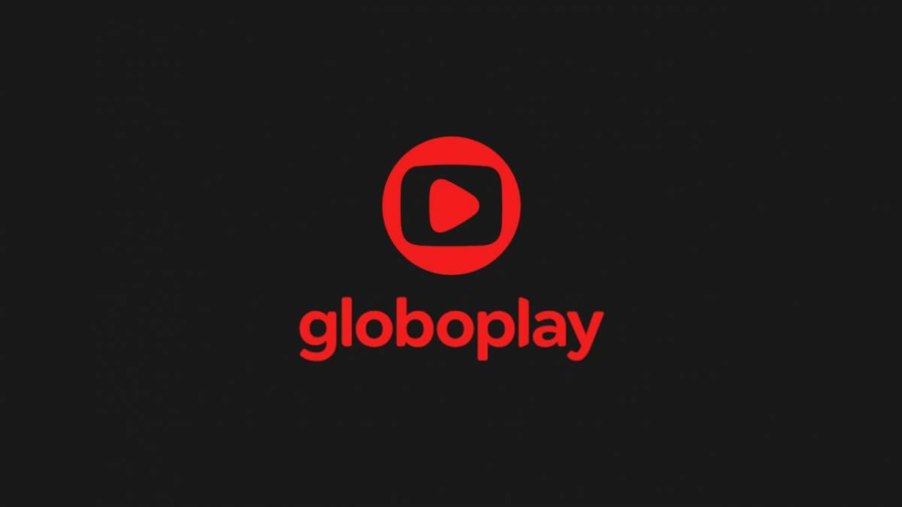

A Netflix foi fundada por Reed Hastings e Marc Randolph em 1997. Na época, a empresa trabalhava com locação de filmes, mas um ano mais tarde o serviço passou a oferecer entrega de DVDs pelos Correios através do site da companhia. Atualmente, a Netflix oferece filmes e séries por streaming e conta com cerca de 117 milhões de assinaturas ao redor do mundo.
O modelo atual de negócio teve início em 2007. Na plataforma, os assinantes pagam uma mensalidade e têm acesso a milhares de títulos 24 horas por dia. Os conteúdos podem ser acessados em TVs conectadas, smartphones, tablets e videogames. Além da transmissão de filmes e séries de terceiros, desde 2013 a Netflix vem produzindo conteúdos originais, como House of Cards, Orange is the New Black, Stranger Things, Narcos e 13 Reasons Why.
A missão da Netflix é permitir que o acesso a filmes e programas de TV seja simples. Para isso, basta que o usuário faça um cadastro na plataforma e desfrute do serviço gratuitamente por 30 dias. Após o período de teste, o usuário pode se tornar assinante, ficando responsável por um pagamento mensal para ter acesso ilimitado aos títulos.
Amazon Prime Video

Amazon Prime Video é o serviço de streaming da Amazon oferecido no Brasil como parte do Amazon Prime, programa que dá vantagens, como frete grátis em compras, e-books ilimitados e player de músicas. A plataforma audiovisual oferece produções exclusivas, como O Homem no Castelo Alto e Jack Ryan, e tem catálogo variado por R$ 9,90 mensais, que dá direito a vídeo em 4K e reprodução em três telas em smart TVs, celulares e consoles de videogame. A seguir, conheça o Prime Video em detalhes e saiba se o serviço é o ideal para você.
O Prime Video pode ser assinado em um plano de R$ 9,90 mensais, que faz parte do pacote Amazon Prime. A assinatura dá acesso não apenas à plataforma de streaming, mas também vantagens e outros serviços da Amazon.
O plano permite streaming em até três telas simultâneas e dá acesso a conteúdo em 4K com HDR, desde que o usuário possua conexão com a Internet que suporte vídeo UHD e também use um dispositivo com tela compatível. Ao assinar o Prime Video, você tem direito a um período de 30 dias gratuitos para testes. Ao final do tempo, as mensalidades são renovadas automaticamente no cartão de crédito cadastrado pela conta.
Tele Cine

A rede de canais de filmes Telecine estreou nesta terça-feira, dia 30 de julho, um reposicionamento da marca. A partir de agora, “Telecine” passa a ser uma marca única de um “hub de cinema“. Com isto, a marca deixa de representar apenas os canais, mas toda uma central dedicada ao cinema.
A marca Telecine passa a ser a única utilizada para representar tanto o serviço de vídeo sob demanda quanto os seis canais lineares já disponíveis nas principais operadoras. Isto significa que ao acessar o antigo site do “Telecine Play“, o assinante verá apenas a marca “Telecine“. O mesmo acontece com os canais lineares: na tela aparece o mesmo logo em todos os canais da rede, sem diferenciação. Nos intervalos, o locutor apenas informa a exibição de um determinado filme, em certa data e horário “no Telecine“. Não são mais informadas as “submarcas” como Telecine Premium ou Telecine Pipoca, por exemplo.
“A marca representa o Telecine em um novo cenário, movido pela tecnologia com distribuição por diversos meios, que além de englobar o tudo em torno do melhor do cinema traz para a conversa quem interessa: o consumidor. Ele é o propósito e a razão do nosso negócio. Os contornos e as cores mais vivas representam a evolução da nossa trajetória“, afirma Flavia Hecksher, Diretora de Marketing do Telecine.
Nas redes sociais, os assinantes parecem não ter gostado muito das mudanças. Alguns reclamaram que as mudanças dificultam na identificação de qual canal estariam assistindo (por conta do mesmo logo usado nos 6 canais lineares). Outros não gostaram da simplicidade da nova marca.
HBO

eguindo o ritmo frenético de empresas de streaming como Netflix, Amazon, Apple TV e Disney+, a HBO promete entrar em 2020 com bastante variedade. Em evento realizado para a imprensa em São Paulo, na manhã desta quinta-feira (31), a marca anunciou diversos títulos que entrarão no catálogo da plataforma digital HBO Go, assim como nos canais com programação regular.
Os maiores destaques são as séries internacionais The Outsider, produção baseada na obra de Stephen King com Jason Bateman e Ben Mendelsohn no elenco e que estreia em janeiro; The Undoing, com Nicole Kidman; e I Know This Much Is True, protagonizada por Mark Ruffalo, que interpretará não só um mas dois personagens que serão gêmeos. Continuando a expandir o universo de uma das maiores apostas do canal, a 3ª temporada de Westworld também retorna em breve.
Com o fim de Veep, série premiada estrelada por Julia Louis-Dreyfus, a HBO deu sinal verde para que Armando Iannucci, criador da série, continue a explorar novidades. Avenue 5 é uma comédia de sua autoria e será estrelada por Hugh Laurie, o eterno Dr. House. Ainda não há data de estreia para nenhuma das séries acima - exceto por The Outsider, que chega às telinhas em 12 de janeiro de 2020.
Quando chegou a hora de falar sobre séries brasileiras, a aposta se focou em Todxs Nós, que aborda o universo LGBTQIA+ e possui uma protagonista de gênero não-binário. O elenco principal, composto por Clara Gallo, Kelner Macêdo e Juliana Gerais, esteve presente no painel após a exibição de um compilado de cenas e comentou que o público pode esperar por uma série que, além de dramática, trará diversos temas contemporâneos.
Para completar o cardápio de novidades, a empresa também anunciou que os canais MAX Prime, MAX Up e MAX serão incorporados à marca HBO e reformulados de modo a se chamarem HBO EXTREME (focado em filmes de ação), HBO POP (com fantasia, comédia e romance) e HBO MUNDI (que dará destaque a filmes independentes do mundo inteiro).
Sobre o HBO MAX, aguardado serviço de streaming que será lançado em maio de 2020, nada foi confirmado com relação à data de estreia no Brasil. O que nos resta é esperar mais um pouco!
Globo Play

Novo plano funciona da mesma forma que o mensal, mas por valor reduzido
O Globoplay anunciou nesta segunda-feira (18) o lançamento de um plano de assinatura anual, que fornece 25% de desconto no valor mensal em comparação ao preço que é cobrado tradicionalmente. Os assinantes dessa categoria irão pagar R$ 196,80 por um ano de acesso ao serviço de streaming.
O valor total é mais baixo do que o plano mensal, que custa R$ 21,90. O Globoplay oferece ainda uma opção de parcelamento, algo diferente para esse tipo de serviço. Dessa forma, o pagamento pode ser dividido em até 12 vezes sem juros de R$ 16,40 no cartão de crédito, funcionando da mesma maneira que o pacote mensal, porém mais barato e com o compromisso de permanecer com o serviço por um ano.
O serviço de streaming da Rede Globo não conta com restrições de uso ou pacotes diferentes, com todos os usuários tendo acesso ao mesmo conteúdo, independentemente do plano escolhido. A plataforma dá a todos os assinantes uma semana gratuita, passando a cobrar em seguida. Com ele, é possível assistir a séries da televisão, novelas, e conteúdo original e licenciado da plataforma.
Algumas das disponibilidades da oferta são o acesso à programação ao vivo da Rede Globo em algumas localidades, assim como a opção de assistir ao Big Brother Brasil em tempo real. Além disso, o Globoplay permite que o usuário faça downloads para visualização offline de conteúdo, resoluções HD e integração com o Chromecast.
O Globoplay é a maior plataforma brasileira de streaming, com cerca de 22 milhões de usuários circulando mensalmente. O serviço reúne produções originais, filmes e séries internacionais renomadas, incluindo algumas exclusivas (exibidas apenas online). A plataforma conta também com produções dos canais Globosat e toda a programação da TV Globo, permitindo que o assinante possa acessar a qualquer momento e de onde estiver aquilo que está no ar, já foi ao ar e o que ainda será exibido. Para assinar o serviço, é preciso acessar a página da promoção e fazer seu cadastro.